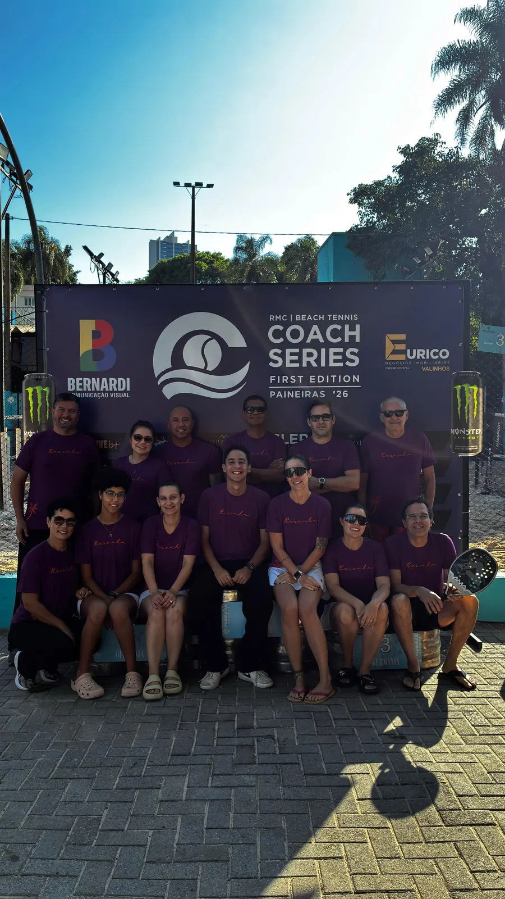
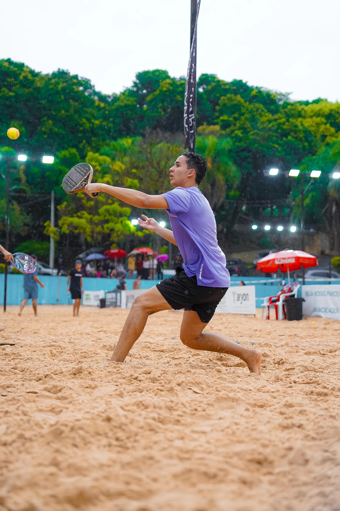
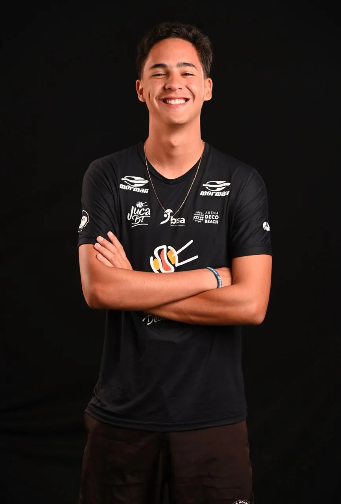
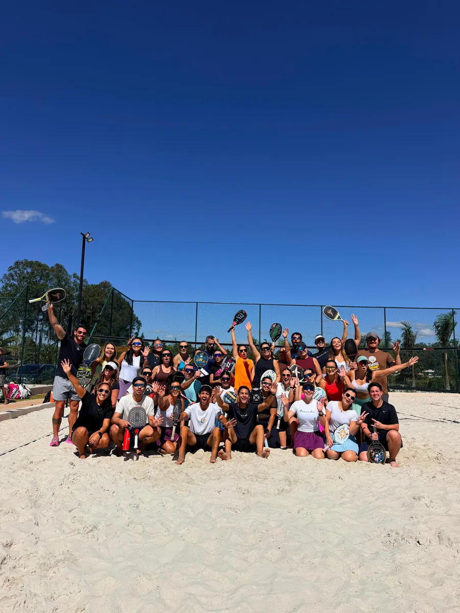
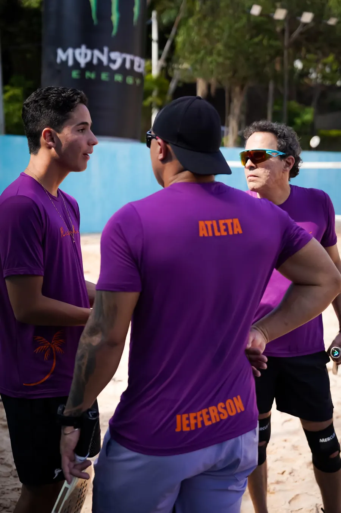
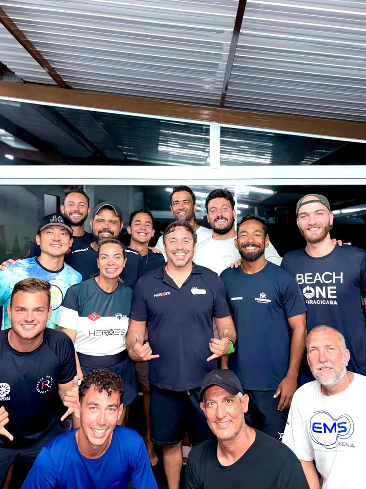

Coach Series
RMC Beach Tennis · 1ª edição
Guilherme AbbottProfessor de beach tênis
Aulas personalizadas na areia, pensadas para o seu nível e para o que você quer conquistar em quadra.

Conheça o professor
Professor de beach tênis com formação pela Confederação Brasileira de Tênis (CBT) e pela International Tennis Federation (ITF). Dá aulas para turmas masculinas, femininas, mistas e kids, do nível D ao A, com treinos também para quem compete.
Formaçãocertificações

Experiência em quadra
Turmas separadas por nível e categoria, de segunda a quinta, entre a tarde e a noite. Além das aulas, atuou como professor no BT Camp e fez o curso da Buccelli Academy.

Na quadra e fora dela
Turmas, eventos e a comunidade do beach tênis em volta do Guilherme.

RMC Beach Tennis · 1ª edição

Turma reunida depois do treino

Entre um ponto e outro

Loja de Beach Tennis · cupom GABBOTT

Todo mundo na foto

Gente que vive o beach tênis